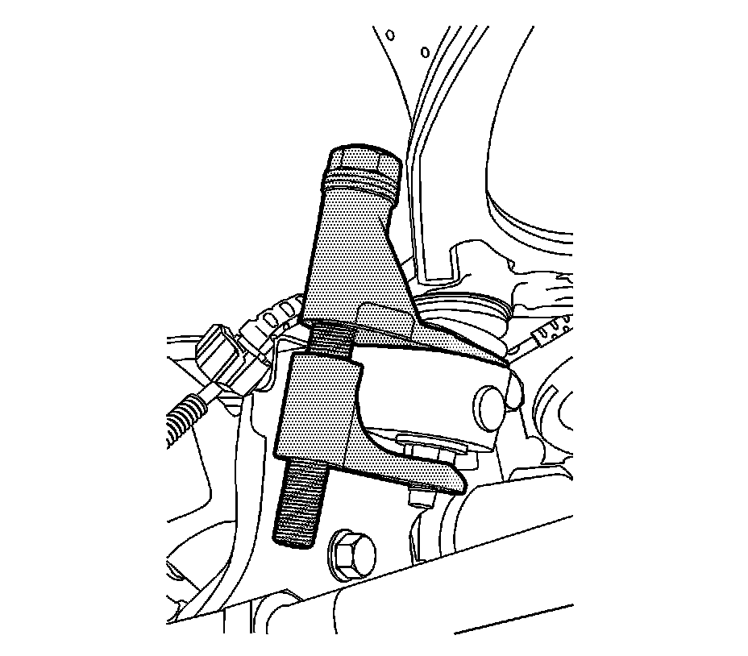
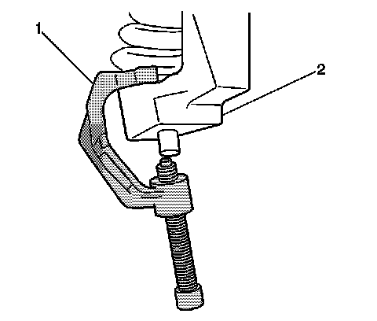
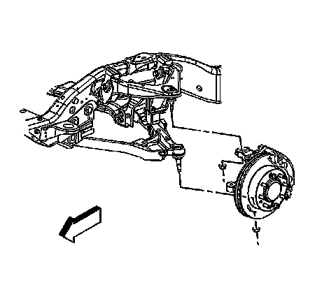

Steering Knuckle Replacement (2500 Series)
Steering Knuckle Replacement (2500 Series)
Tools Required
^ J 43631 Ball Joint Remover
^ J 45851 Ball Joint Separator Protector Adaptor
^ J-42188-B Ball Joint Separator
Removal Procedure
1. Raise and support the vehicle. Refer to Lifting and Jacking the Vehicle.
2. Remove the tire and wheel.
3. Support the lower control arm.
4. Remove the wheel hub and bearing assembly.
5. Disconnect the outer tie rod to the steering knuckle.
6. Remove the brake hose bracket retaining bolt from the steering knuckle.

7. Remove the upper control arm retaining nut and separate the upper ball joint from the steering knuckle using the J-42188-B.

8. Remove the lower control arm retaining nut. Separate the lower ball joint from the steering knuckle (2) using the J 43631 and the J 45851 (1).

9. Remove the steering knuckle.
Installation Procedure
1. Clean all grease and contaminants from the tapered section and the threads of the upper ball joint, the lower ball joint, and the tie rod end.
2. Clean and inspect the taper holes and the mounting surfaces of the steering knuckle. If any of the tapered holes are elongated, out of round, or damaged, replace the steering knuckle.
3. Install the steering knuckle.
Notice: Refer to Fastener Notice.
4. Connect the lower ball joint to the steering knuckle and install the retaining nut.
Tighten the nut to 110 N.m (81 lb ft).
5. Connect the upper ball joint to the steering knuckle and install the retaining nut.
Tighten the nut to 50 N.m (37 lb ft).
6. Install the brake hose and the bracket retaining bolt to the steering knuckle
Tighten the bolt to 9 N.m (80 lb in).
7. Connect the outer tie rod to the steering knuckle.
8. Install the wheel hub and bearing assembly.
9. Install the tire and wheel.
10. Remove the lower control arm support.
11. Lower the vehicle.
12. Verify the wheel alignment. Refer to Wheel Alignment Specifications.